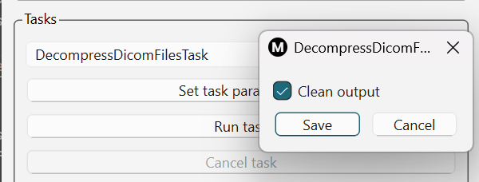
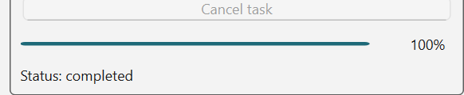

Running individual tasks in a basic workflow
Mosamatic Desktop 2 is a task-oriented tool. This means that you can run a sequence
of tasks and have each task's output serve as input to the next task. You start by
specifying the main input directory. Then you run your first task. This task will
process the images in the input directory and save the output results (which can be
another set of images or something else) to its output directory. This output directory
will be at the same level as the input directory and named according to the task's name.
For example, if your main input directory is D:\Mosamatic\Data\input, and your first
task is called DecompressDicomFilesTask then this task's output directory will be
D:\Mosamatic\Data\decompressdicomfilestask.
Below we will describe the main workflow for analyzing muscle and fat in CT images
at the L3 level. Keep this page open while you're going through the steps in the
tool.
1. Specifying the main input directory
In the top-level Input panel, click the Select input directory button
and select the directory containing all your L3 image slices. This directory will
then appear in the pull-down menu right below this button (see Figure 1).

Figure 1: Specifying main input directory
2. Decompress DICOM files
DICOM images are often stored with JPEG2000 compression. This is not a problem but Mosamatic
Desktop 2 can only process uncompressed images. The DecompressDicomFilesTask task takes
care of this. Any images that were not compressed will be copied without modification to the
task's output directory.
To run the DecompressDicomFilesTask, select it from the
pull-down menu in the Tasks panel (see Figure 2). This task will use the previously
specified main input directory for its input, i.e., the directory with your L3 images. If you
want it to use another input directory, select it in the pull-down menu of the Input
panel.

Figure 2: Selecting task for decompressing DICOM files and setting its parameters
After selecting the DecompressDicomFilesTask, click the Set task parameters button.
This will allow you to configure the task's parameters (if any). Each task has a Clean output
parameter that tells it to delete any existing output directories for the task, if it already
exists. By default, the Clean output option is enabled. The DecompressDicomFilesTask
does not have any other parameters to just click the Save button. This will enabled the
Run task button. Click it to run the task. Based on the number of files in the main input
directory, a progress bar will show the task's progress as a percentage (see Figure 3).

Figure 3: Showing progress of task
When the DecompressDicomFilesTask task has finished, its output directory will be added to
the pull-down menu of the Input panel and automatically selected so you can run the next
task rightaway.
3. Rescale DICOM image to 512 by 512
Mosamatic Desktop 2 can only process DICOM images that are 512 by 512 pixels in size. Sometimes
larger (often wider) images occur, for example, for obese patients that need a larger Field of View
(FOV) to capture the full anatomy of the patient. For such images, Mosamatic Desktop 2 can perform
a rescaling operation that first adds black space to the image to make it square, and then downscale
the image to obtain an image of 512 by 512 pixels. The consequence of this operation is that you may
lose a bit of resolution (the anatomy is covered by fewer pixels). The exact impact of this is not
completely known but it won't affect the mean gray values of the rescaled image, only the surface
areas of the muscle and fat regions (slightly).